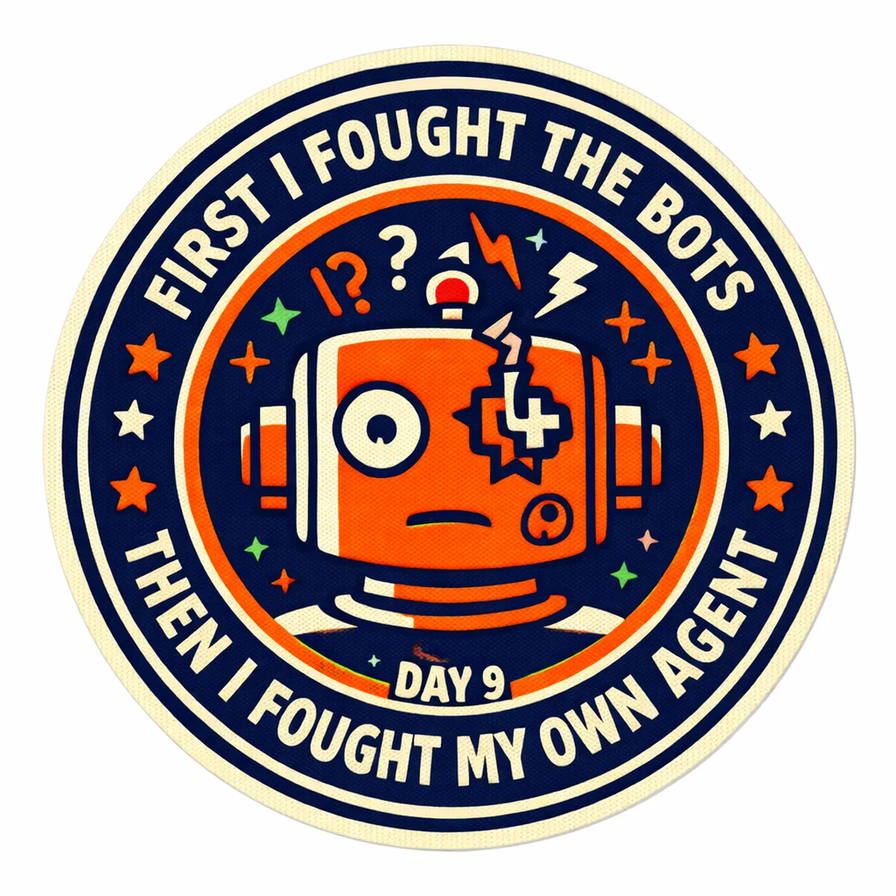
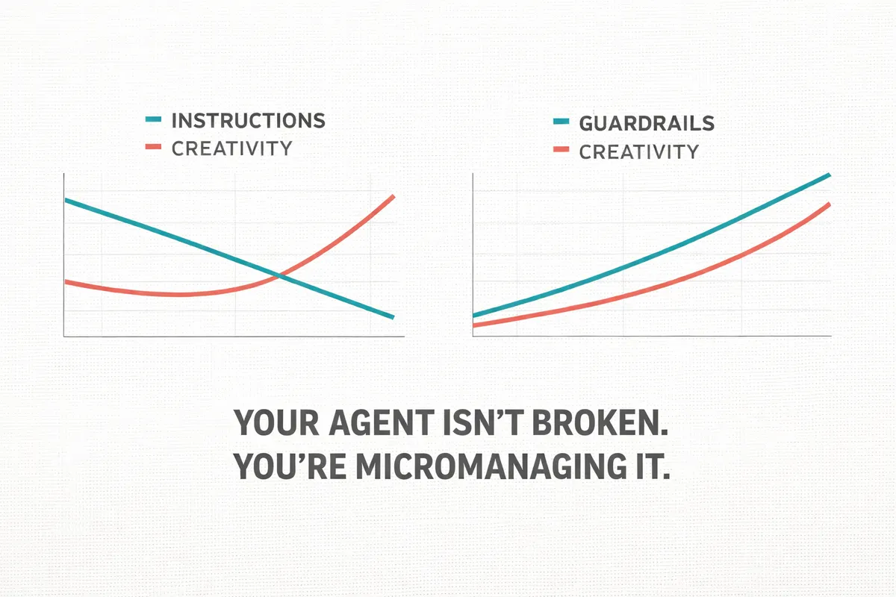

The Morning Standup
- Spam fix. Woke up to spam flooding the contact forms. Fixed it.
- Writer agent live. It now writes 18 posts per week.
- Code review with Track. Updated the writer. Clean.
- Blueprints page. Built it for CAIO Coach so plans, workflows, and diagrams auto-publish there now.
- Telegram to Lark. Chat threads were fighting me. Switched. Done.
- New web developer skills. Page builder and form builder.
All of this before the day really started. Feeling sharp. And then...
The Pipeline That Makes This Possible
Let me back up and explain why 18 posts a week from one person isn't crazy.
The Mahjong Tarot project is a labor of love. My dad wrote a book that blends mahjong with tarot-style readings. The goal is simple: bring it back to life. That means content. Lots of it. Consistently.
Here's the system:
- Monday: A "shock and awe" post that hooks new readers, something bold, like the Year of the Fire Horse. Plus social posts for Monday and Tuesday.
- Wednesday: Pull wisdom directly from the book. Practical advice on making better decisions. Plus social for Wednesday and Thursday.
- Friday: Feel Good Friday, an affirmation or weekend intention. Plus social for Friday and Saturday.
But here's the part most people miss.
The posts aren't random. They're connected by strategy. Monday draws you in. Wednesday teaches you something. Friday makes you feel something. You can actually measure what's working and adjust.
Someone recently told me they're using Claude's marketing team skills to write their content. That's great. But a skill is a task. It writes one post. What it doesn't do is tie your Monday post to your Wednesday post to your Friday post. It doesn't build a content strategy you can test and iterate on. Getting a set of AI skills is like getting a prompt library. Useful? Sure. Foundational? No. The workflow is the foundation.
And the workflow has its own rhythm:
- Monday 8am: A 30-minute call with my dad. We talk about the week's themes, he shares stories, new ideas, reactions to what's been published. His thoughts go straight into the source files alongside his old writing and his new book. This is the part that matters most: the ideas. AI doesn't have ideas. People do. AI just executes.
- Tuesday: The writer agent fires and produces everything for the week, pulling from those source files.
- Wednesday morning: The human wakes up to a full content calendar. 48 hours to review and edit.
- Thursday: The designer agent runs and creates all the images.
- Weekend: Human reviews the visuals. Makes swaps if needed.
- Monday morning: The web developer agent starts publishing. And the cycle starts again with another call.
Until the designer breaks.
Then the Designer Broke
Here's the thing about engineering AI agents: the instinct is to be thorough. A friend of mine who's learning this stuff, along with an engineer I work with, built the designer agent. They did what engineers do. They over-engineered it.
Detailed step-by-step instructions. Multiple skills files. Tons of examples showing exactly what the output should look like. He wanted to remove all ambiguity. Make it foolproof.
The result? Every single image looked the same.
One style. No bold text. No variety. It kept generating candles and mahjong tiles over and over. (It's mahjong cards, not tiles. The agent didn't even get that right.)
I burned my entire night on this. Hit the 70-image API limit trying to generate my way out of it. Didn't stop until 11pm. Forgot to do my end-of-day review. The whole routine fell apart because one agent couldn't do its job.
The Lesson I Already Teach But Had to Learn Again
The hardest part of engineering AI agents is resisting the urge to control every detail. Here's what happened: the agent was given so many instructions that it collapsed into the safest possible average of everything it was told. When you over-specify, AI doesn't get more creative. It gets less creative. It finds the one output that satisfies every constraint and repeats it.
Engineers do this instinctively. They try to engineer away variability. But with creative work, variability is the entire point.

AI doesn't need perfection. It needs outcomes and guardrails.
Defining your workflow (the steps, the sequence, the handoffs) is good. That's structure. But dictating exactly what each step should produce? That's where it breaks.
How I Fixed It
I deleted the agent. All of it. Started from zero.
Instead of detailed generation instructions, I gave it three simple decisions to rotate through:
- What's the key theme for this image? Pull it from the content.
- Pick an image style. Rotate through about ten options: editorial illustration, photorealistic, typography, pop art, cinematic. No repeats back to back.
- What type of image? A human, a scene, or text. If text, write the words in English.
Then the real fix: I stopped generating images entirely. Instead, I had the agent write the prompts.
That's the foundation I teach, and I had to relearn it the hard way: have AI write the prompt. Read the prompt. Check that it understands what you want. Then, and only then, generate.
You catch problems at the thinking stage, not after you've burned 70 API calls and your whole evening.
Day 9 of 14
Some days you ship ten things before lunch. Some days one broken agent eats your entire night.
That's the build. That's what it actually looks like when you're heading toward a one-man company with AI. Not a highlight reel. Not a polished case study. Just the real thing, wins and failures, with five days left to pull this together.
Here's what I've learned nine days in: you can build an incredible amount with AI, but you can't do it entirely alone. I run two companies full-time, Edge8 AI and AI Officer Institute. I'm the sole operator of both. This 14-day build? It's a side project. And I still need an engineer to call when the designer agent won't cooperate.
That's not a failure. That's the model. Engineering AI agents is a skill every business needs, and I believe every successful business is going to have an AI engineer working alongside them. Not a full dev team. Not an agency. One person who understands how to build and fix the systems that run your company.
The question isn't whether you need one. It's whether you've found yours yet.
If you're building something like this and want to talk through it, reach out. I've probably already hit your wall.